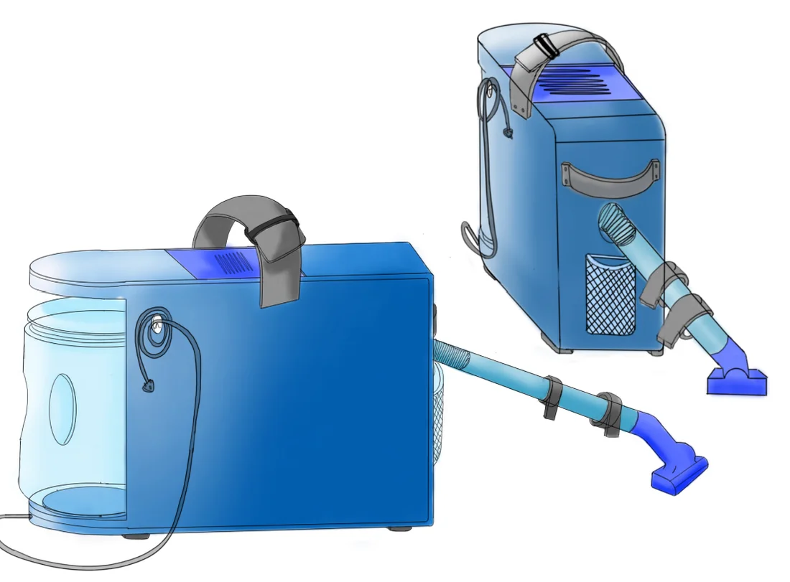

Product design portfolio
Rachel Zinkin
Product Design and Manufacture (BEng), University of Nottingham
Seeking a placement in product design and manufacturing. My work covers sketching and digital drawing, CAD in SolidWorks, laser cutting, 3D printing and cardboard prototyping.

Contents
Six projects. Select one to jump straight to it.
Wet and Dry Vacuum Cleaner Project
A wet and dry vacuum cleaner. Ideation led to two concepts, developed through sketches and early concept boards: concept 1 is a childcare vacuum and concept 2 is for student accommodation. Concept 2 is now being refined and modelled in SolidWorks.
CAD Surfacing Razor Project
A CAD surfacing exercise: turning a provided sketch of a razor into a 3D model in SolidWorks.
Lift and Shift 3D Printing Project
A mechanism that lifts a sheet of perspex and moves a pen across it in a straight line to draw. I designed it in SolidWorks and 3D printed the parts.
Portable Heater Project
A portable heater built from hexagonal sections, taken from ideation sketches through cardboard models to development drawings.
Handheld Scrub Brush Drawing Project
A drawing project: practising colour, light and shade, then ideation and development of a handheld scrub brush with an attachment system.
Sensory Walkway A-level Project
An indoor sensory walkway for children at an SEN primary school. Made using laser cutting, CAM and SolidWorks, and tested with children of the age it was designed for.
About
I'm studying Product Design and Manufacture (BEng) at the University of Nottingham. I like projects where I can sketch an idea, model it, make it, and then test it with the people it is for.
Outside of my degree I play lacrosse for the University of Nottingham and nationally.
I am passionate about inclusivity within my community, both in design and in everyday life, and am currently working on a project with Enactus (a non-profit student-led organisation) to run events and provide tools to improve the employability of local SEN students.
I am looking for a placement where I can work on real products and learn how designs get made.
Skills and tools
- SolidWorks
- Adobe
- Microsoft Office
- Jira
- Bambu Studio
- KeyShot
- AI tools
- Canva
- CAM
- Laser cutting
- 2D Design Tools
- 3D printing
- Engineering drawings
- Detailed drawings
- Digital drawing
- Perspective sketching
- Cardboard modelling
- Exploded diagrams
- Stakeholder interviews
Contact
I'd be glad to hear about placement opportunities. The full portfolio is also available as a PDF.